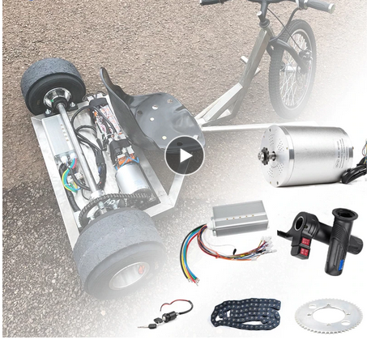
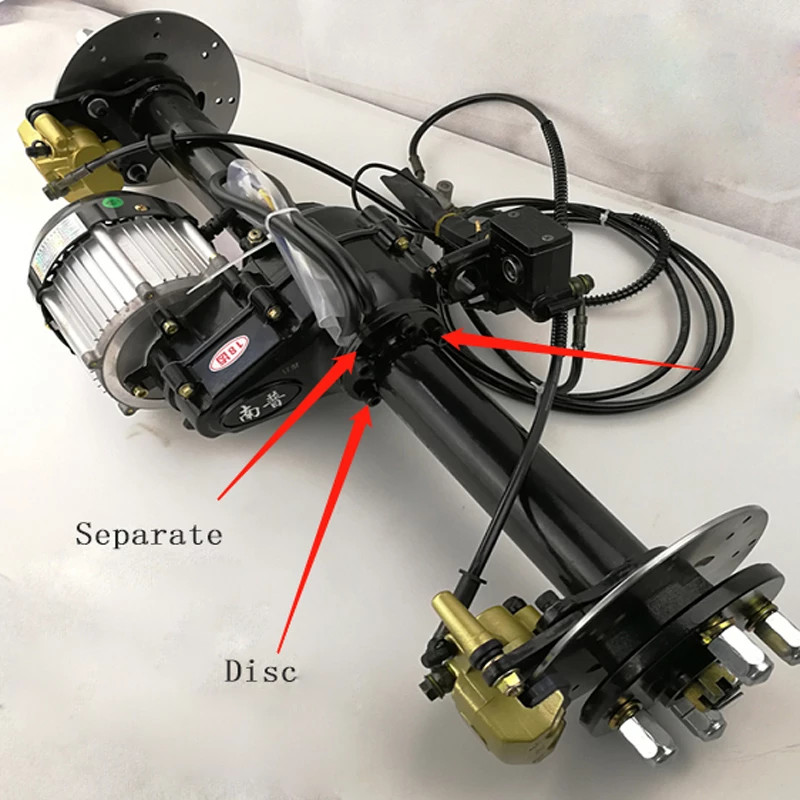
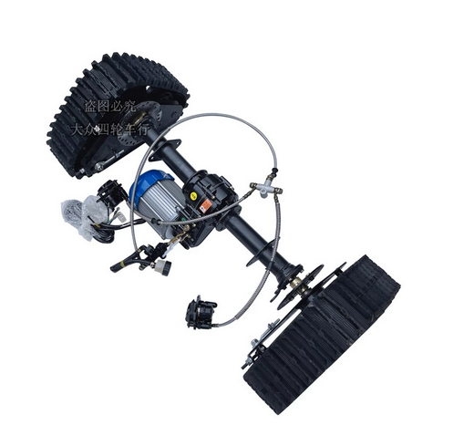
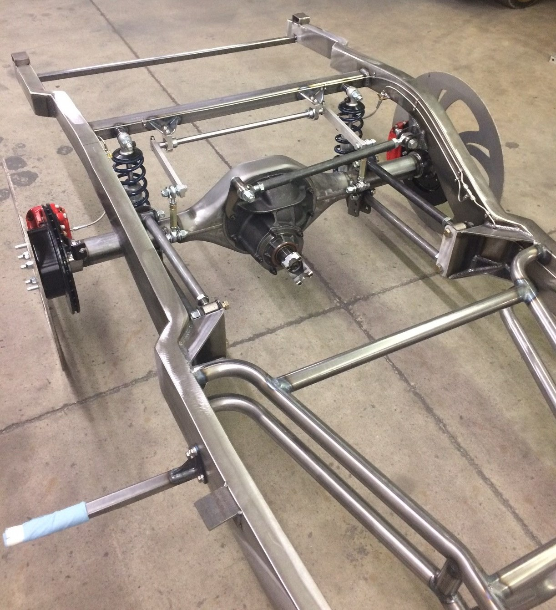

wheels and axles revision 9570
^ Techniques infobox ^^
| image | Go-kart-drive.scad.png |
| designers | Phil Jergenson, [[user:tim|Timothy Schmidt]] |
| date | 1987 |
| vitamins | |
| materials | |
| transformations | |
| lifecycles | |
| tools | [[wrenches|Wrenches]] |
| parts | [[frames|Frames]], [[nuts|Nuts]], [[bolts|Bolts]], [[end_caps|End caps]], [[axial_bearings|Axial bearings]], [[keyed_shafts|Keyed shafts]], [[keys|Keys]], [[shaft_collars|Shaft collars]], [[wheel_hubs|Wheel hubs]], [[wheels|Wheels]] |
| techniques | [[tri_joints|Tri joints]] |
| git | |
| files | |
| suppliers | |
| reversible | true |
Introduction
A beam axle, rigid axle or solid axle is a dependent suspension design, in which a set of wheels is connected laterally by a single beam or shaft. Beam axles were once commonly used at the rear wheels of a vehicle, but historically they have also been used as front axles in four-wheel-drive vehicles. In most automobiles, beam axles have been replaced with front and rear independent suspensions.
Challenges
Approaches
Light duty: Modular go kart drive

Medium duty: Integrated transaxle
Variations


Heavy duty: 9 inch Ford bolt-on rear axle

- housing
- third member
- pinion yoke
- gearset
- axles
- bearings